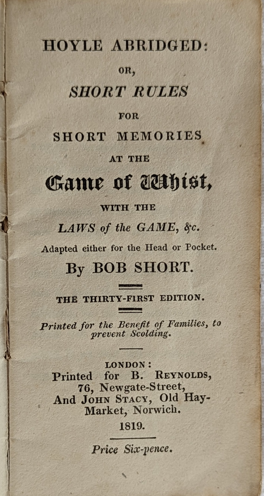

A Descriptive Bibliography of Edmond Hoyle
Copyright © 2014-26 by David Levy
(page updated 2023-11-26)User Guide
Stacy.Whist.1819
Short Rules for Whist, printed for B. Reynolds, 1819.
 |
Title: | HOYLE ABRIDGED: | OR, | SHORT RULES | FOR | SHORT MEMORIES | AT THE | Game of Whist, | WITH THE | LAWS of the GAME, &c. | Adapted either for the Head or Pocket. | By BOB SHORT. | [short oxford rule] | THE THIRTY-FIRST EDITION. | [short oxford rule] | Printed for the Benefit of Families, to | prevent Scolding. | [short rule ] | LONDON : | Printed for B. Reynolds, | 76, Newgate-Street, | And John Stacy, Old Hay-|Market, Norwich. | 1819. | [short rule] | Price Six-pence. |
| Collation: | 11.6 x 6.0: A12 [$5 signed]; 12 leaves, pp. [1–4] 5–8 [9] 10–11 [12] 13–24 |
| Contents: | Signature (Page) Reference | Contents | Signature (Page) Reference | Running Titles |
| A1r (1) | title | |||
| A1v (2) | blank | |||
| A2r (3) | ‘TO THE PUBLIC. | [...] | BOB SHORT.’ | |||
| A2v (4) | ‘JUST PUBLISHED, | [...] | The British Melodist, | [...]’ | |||
| A3r–A4v (5–8) | ‘[short oxford rule] | DEDICATION. | [short rule] | TO THE FOUR KINGS. | [...] | Your devoted Slave, | BOB SHORT. | Baker's Coffee-house, | Exchange Alley, | Jan. 1, 1793.’ | |||
| A5r–A12v (9–24) | ‘THE | GAME OF WHIST. | [...] | [colophon]’ |
| Publisher: | B. Reynolds, John Stacy |
| Printer: | John Stacy (colophon) |
| Price: | 6d. (title) |
| Colophon: | ‘[row of type orn] | Stacy, Printer, Market-Place, Norwich.’ |
| Copies Seen: | Levy [1840] |
| Other Copies: | L [D-7913.a.70] (destroyed); Sings |